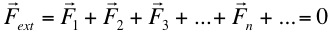
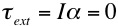
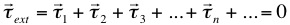
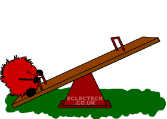

Statics:
Equilibrium of Rigid Bodies

“Equations are more important to
me, because politics is for the present, but an equation is
something for eternity”
Albert Einstein

- A rigid body is in equilibrium if it is at rest in an inertial reference frame.
[Inertial reference frames are
frames moving at constant velocity with respect to one another]
- A body at rest in the inertial reference frame of the earth is said to be in static equilibrium.
- A body at rest in any other inertial reference frame is said to be in dynamic equilibrium.
- Since an object moving at constant velocity is at rest in some inertial reference frame we need only consider conditions for static equilibrium. In static equilibrium an object must satisfy the conditions for both translational and rotational equilibrium.
- TRANSLATIONAL EQUILIBRIUM
Linear acceleration, acm= 0, therefore Fext = Macm = 0, where

or
In this course we will
limit ourselves to problems in which all forces are
acting in a plane, meaning that there will only be x and
y equations.
- ROTATIONAL EQUILIBRIUM
Angular acceleration = 0, therefore , where

or
In this course we
will limit ourselves to problems in which all
forces act in a plane, which means there can
only be torques about an axis perpendicular to
this plane (typically the z axis).
Therefore, only the z torque equation above
will be necessary.
 The
choice of axis about which to calculate
torques is arbitrary. If the sum of
the torques about one axis is zero the
body is not rotating; using a different
axis to calculate torques will not cause
the body to rotate, thus the total torque
must still be zero.
The
choice of axis about which to calculate
torques is arbitrary. If the sum of
the torques about one axis is zero the
body is not rotating; using a different
axis to calculate torques will not cause
the body to rotate, thus the total torque
must still be zero.
 Although all
axes are arbitrary in any specific
situation there are typically certain
choices of axes about which to calculate
torques which will make your life easier.
Although all
axes are arbitrary in any specific
situation there are typically certain
choices of axes about which to calculate
torques which will make your life easier.
- Choose an axis through which as many forces as possible act, the torque of these forces about such an axis are zero.
- Choose an axis such that one or more of the unknown forces in the problem act through this axis.
- General
Comments
- If all forces acting on a body are concurrent then rotational equilibrium is assured, we need only apply the conditions for translational equilbrium.
- If there is more than one body in the problem consider the equilibrium of each body separately.
- Example
of a static structure - IRONBRIDGE
{kind=link}

"In the long run we are all dead"
John
Maynard Keynes – A tract on Monetary Reform
(1923)

Dr. C. L. Davis
Physics Department
email: c.l.davis@louisville.edu